Unidad 2: Sistemas de Numeración y Representación numérica. Aritmética Binaria
- Introducción. Los sistemas de numeración y su evolución histórica.
- Sistemas de numeración decimal, binario, octal y hexadecimal.
- Pasajes entre sistemas de números enteros y positivos.
- Representación de Números signados: Convenio de signo y magnitud.
- Convenio de complemento a uno. Convenio de complemento a dos.
Unidad 2: Sistemas de Numeración y Representación numérica. Aritmética Binaria
- Operaciones de adición y de sustracción utilizando el convenio de complemento a dos.
- Representación de números fraccionales. Notación punto fijo y punto flotante. Precisión y truncado. Errores en notación de punto flotante.
- Formato IEEE 754.
- Representación de caracteres: Binario Codificado Decimal (BCD), ASCII, EBCDIC, Unicode.
Video OnLine
Sistema Binario ¿Cómo es?
Sistema Binario ¿Cómo es?
Bit y Byte
bit, nibble, byte...
Representación / Interpretación
hexa, binario, ASCII
Distintos significado de "hecho":
- El hecho sucedió en casa
- He hecho esto miles de veces
Distintos significado de "visto":
- Lo he visto seguido a Juan
- Visto y considerando los sucedido...
Disfrutemos mientras podamos...
Representación / Interpretación
{kind=link}
{kind=link}
Sistemas de Numeración
Sistemas de Numeración
- Dos tipos:
- No posicionales: p/ej numeración romana
- Posicionales: Como nuestro sistema decimal
- Bases:
- Decimal: Base 10 (Mano)
- Duodecimal: Base 12 (Meses año)
- Computadora: Binaria!
- Base 2 (binario)
- Base 8 (octal)
- Base 16 (hexadecimal)
Bases binarias
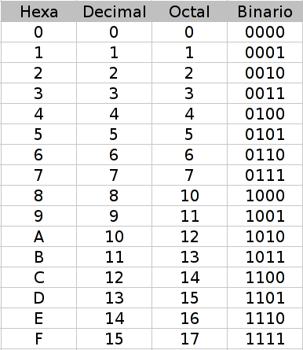{kind=link}
Bit mas y menos significativo
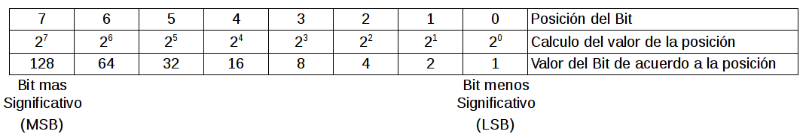{kind=link}
Conversión Decimal a Binario
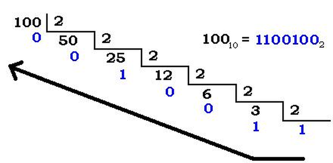Conversión Binario a Decimal
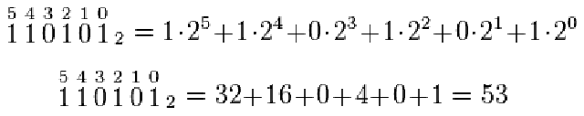 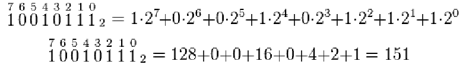Imprimiendo en distintos formatos
#include <stdio.h>
int main(void) {
int numero = 0;
printf("Ejemplo: Conversión a octal/hexadecimal/ascii \n");
printf("Ingrese el numero a convertir \n");
scanf("%d", &numero);
printf("Dec: %d - Oct: %o - Hex: %x - Ascii: %c \n", \
numero, numero, numero, numero);
return 0;
}
Compilemos y corramos el programa
$ gcc -o conv conversion.c
$ ./conv
Códigos
Binario codificado en decimal (BCD)
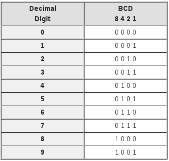{kind=link}
Tabla ASCII
(American Standard Code for Information Interchange)
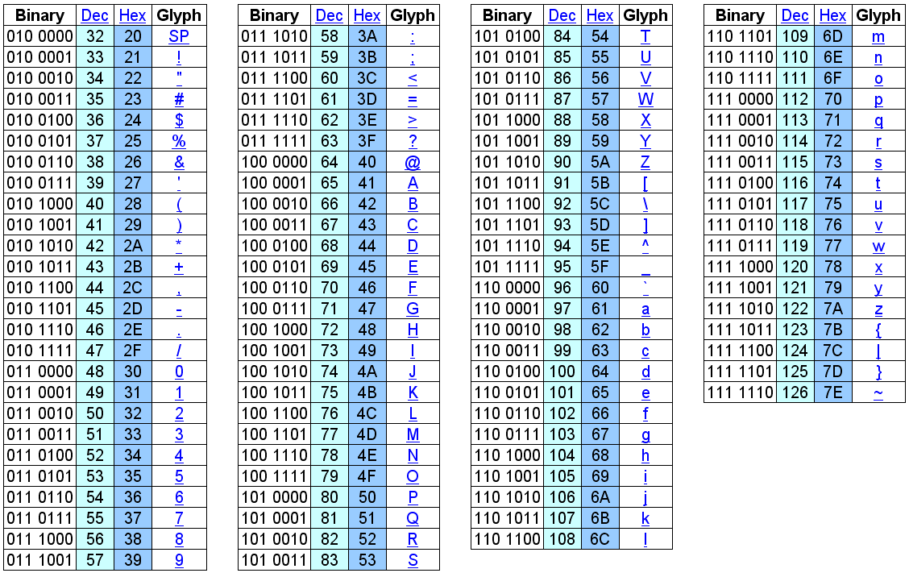{kind=link}
Operaciones Binarias
Distintas formas de llamarlo, pero siempre se refieren a operaciones lógicas
NOT o Negación
- Verdadero (negado) = Falso ( !1 = 0 )
- Falso (negado) = Verdadero ( !0 = 1 )
Operadores lógicos
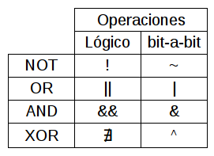
{kind=link}
Multiplicación Lógica (AND &)
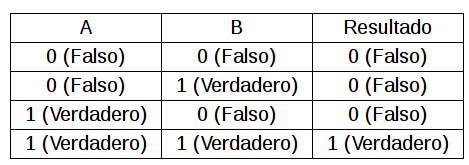{kind=link}
Suma Lógica (OR |)
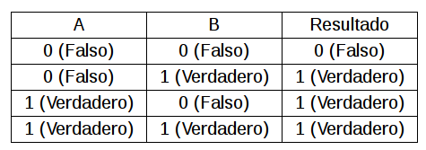{kind=link}
Suma Exclusiva (XOR ^)
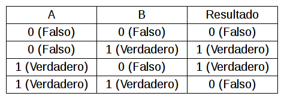{kind=link}
Mas sobre el tema:
Números negativos y fraccionales
(opcional)
Complemento a 2 (CA2)
- Es una forma de representar números negativos
- Complemento a 1 (CA1):
- Tiene una doble representación del cero
- Complemento a 2 (CA2):
- Mejor rango ( 0 = -0 )
Complemento a 2 (CA2)
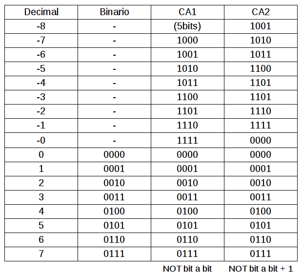{kind=link}
Números fraccionales en binario
- Representar números fraccionales en binario puede llevar a errores de conversión.
- No todos los números fraccionales son representables sin error en binario
- Todo número fraccional representado en binario será multiplo de 1/2x
Números fraccionales en binario

Números fraccionales en binario
- 0,1 * 2 = 0,2 => 0
- 0,2 * 2 = 0,4 => 0
- 0,4 * 2 = 0,8 => 0
- 0,8 * 2 = 1,6 => 1
- 0,6 * 2 = 1,2 => 1
- sigue...
0,1 decimal a bin
- 0,2 * 2 = 0,4 => 0
- 0,4 * 2 = 0,8 => 0
- 0,8 * 2 = 1,6 => 1
- 0,6 * 2 = 1,2 => 1
- ...
- 0 00110011
- bin: 0,00011 0011...
De acá en mas se repiten las cuatro cifras periódicamente...
En orden:
Números fraccionales en binario
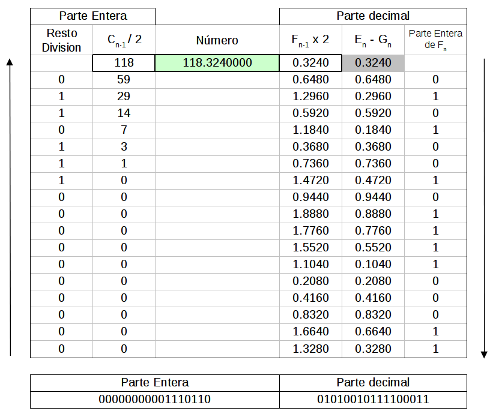{kind=link}
Números fraccionales: Calculadora
IEEE 754
(informativo)
Formato punto flotante (IEEE 754)
- El estándar de la IEEE para aritmética en coma flotante (IEEE 754) es el estándar más ampliamente usado para las computaciones en punto flotante, y es seguida por muchas de las implementaciones de CPU y FPU.
- El estándar define formatos para la representación de números en punto flotante (incluyendo el cero) y valores desnormalizados, así como valores especiales como infinito y NaNs conjuntamente con un conjunto de operaciones en punto flotante que opera sobre estos valores.
Formato punto flotante (IEEE 754)
- Formatos mas usados:
Mas sobre el tema:
Formato punto flotante (IEEE 754)
precisión simple (32 bits)
1 8 23 tamaño en bits
+-+--------+-----------------------+
|S| Exp | Fracción |
+-+--------+-----------------------+
31 30 23 22 0 índice del bit (0 a la derecha)
desplazado +127
precisión doble (64 bits)
1 11 52
+-+-----------+----------------------------------------------------+
|S| Exp | Fracción |
+-+-----------+----------------------------------------------------+
63 62 52 51 0
desplazado +1023
IEEE 754
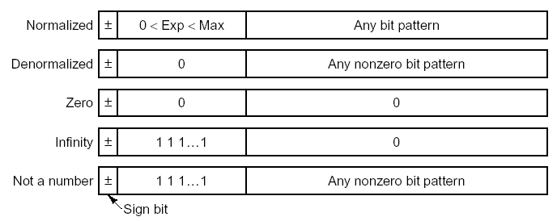{kind=link}
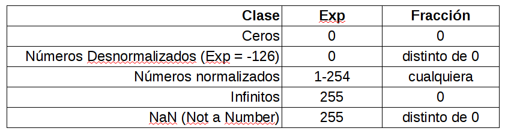
{kind=link}
IEEE 754
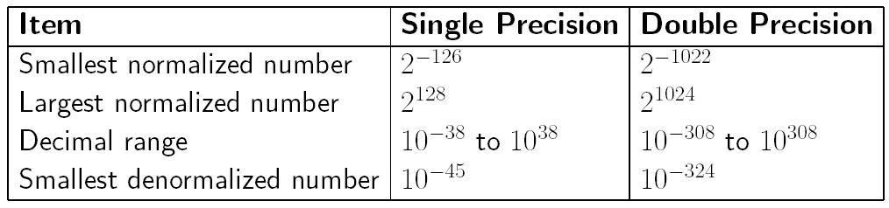{kind=link}
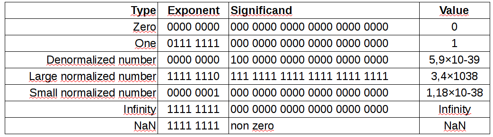
{kind=link}
IEEE 754: Ejemplo
Número decimal -118,625
- Necesitamos obtener:
- El signo
- El exponente
- La fracción
- Dado que es un número negativo, el signo es "1"
- Escribimos el número (sin signo) en binario = 1110110,101
IEEE 754: Ejemplo
Número decimal -118,625 - Fracción (normalizada)
- Ahora, movamos el punto decimal a la izquierda, dejando solo un 1 a su izquierda:
- 1110110,101 = 1,110110101 x 26
- Esto es un número en coma flotante normalizado
- La fracción es la parte a la derecha del punto decimal, rellenada con ceros a la derecha hasta que obtengamos todos los 23 bits:
- 11011010100000000000000
IEEE 754: Ejemplo
Número decimal -118,625 - El Exponente
- El exponente es 6, pero necesitamos convertirlo a binario y desplazarlo:
- Para el formato IEEE 754 de 32 bits, el desplazamiento es 127, así es que 6 + 127 = 133.
- En binario, esto se escribe como 10000101.
- Por lo tanto la cadena de unos y ceros resultante es:
+-+--------+-----------------------+ |S| Exp | Fracción | +-+--------+-----------------------+ |1|10000101|11011010100000000000000| +-+--------+-----------------------+ 31 30 23 22 0 índice del bit (0 a la derecha)